Chapter 27: Retrieval-Augmented Generation (RAG)
Opening Story: The Lawyer Who Couldn’t Trust the Answer
It started with a simple question.
A junior associate at a mid-sized law firm needed a quick answer:
“What are the key precedents for liability in autonomous vehicle accidents in California?”
She did what everyone does now—she asked an AI assistant.
The response came back almost instantly. Clean. Confident. Structured. It listed several landmark cases, complete with summaries and dates. It even explained how courts were “increasingly leaning toward shared liability models.”
It looked perfect.
She almost pasted it directly into the client memo.
But something felt off.
One of the cases sounded unfamiliar. Not just unfamiliar—suspiciously polished, like it had been written for a textbook rather than pulled from a real legal database. Another case citation didn’t match anything in Westlaw or LexisNexis.
So she did what good lawyers do when something feels too smooth to be true: she checked.
Nothing.
The cases weren’t real.
Not slightly wrong. Not misquoted. Just… fabricated.
The AI hadn’t retrieved legal knowledge. It had guessed what a good answer should look like.
And that’s when the problem became obvious.
A general AI model is like a brilliant intern who has read almost everything—but doesn’t have a law library open in front of them. When asked a question, it doesn’t search real cases. It predicts language that sounds right.
Sometimes that works beautifully.
Sometimes it creates fiction with confidence.
That was the moment the firm changed how they used AI.
They didn’t stop using it.
They just stopped trusting it blindly.
Instead, they introduced a new workflow:
First, the system retrieves real documents from trusted legal sources.
Then, the AI writes the answer using only that material.
No guessing. No improvisation. No invented case law.
Just grounded reasoning.
That system had a name: Retrieval-Augmented Generation.
Or more simply: RAG.
And it solved the exact problem she had just experienced.
Not by making the AI smarter.
But by making it look things up before speaking.
The Core Idea (Without the Technical Noise)
A normal AI model: - Remembers patterns - Predicts answers - Sometimes hallucinates details
A RAG system: - Searches real documents first - Feeds them into the model - Forces answers to stay grounded in evidence
Mental Model
Think of it like this:
A standard AI is a lawyer arguing from memory.
A RAG system is a lawyer who walks into court with a full digital library and cites everything live.
flowchart TD
A[User Question] --> B[Search Knowledge Base]
B --> C[Relevant Documents Retrieved]
C --> D[AI Reads Context]
D --> E[Final Answer Based Only on Retrieved Data]
Section 1 — Why This Problem Exists in the First Place
Retrieval-Augmented Generation does not begin as a solution.
It begins as a limitation.
To understand why it exists, you have to accept something that is not immediately obvious when interacting with modern AI systems:
A language model is not connected to reality.
It does not check facts.
It does not query databases.
It does not verify anything it says.
It simply generates the most statistically likely sequence of words based on patterns learned during training.
That difference is subtle in explanation—but decisive in consequence.
A System That Never Looks Things Up
A standard AI model is trained on a massive snapshot of human text: books, articles, websites, code, and conversations.
But once training is complete, the system becomes static:
- No live updates
- No access to external databases
- No ability to verify information
- No built-in mechanism to “look things up”
At runtime, there is only one process:
Predict the next word based on learned patterns.
So when a user asks:
“What are the key precedents for liability in autonomous vehicle accidents?”
the model does not search legal databases like Westlaw or LexisNexis.
Instead, it reconstructs what such an answer should look like based on similar legal language it has seen before.
This is where the illusion begins.
📌 Figure 27.1 — Closed Book vs Open Book Thinking
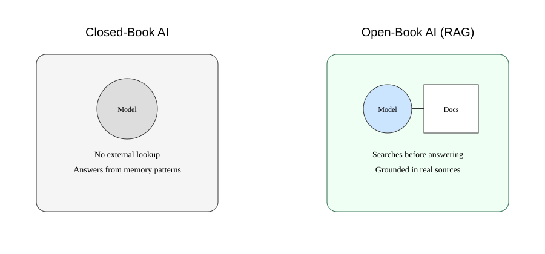
Figure 27.1: A standard AI operates like a closed-book system relying only on internal memory patterns, while retrieval-based systems act like open-book systems that consult external documents before answering.
Hallucination: When Language Becomes Too Confident
Because the model is optimized to produce fluent and coherent text, it does not distinguish between:
- what is true
- what is plausible
- what merely sounds correct
As a result, it can generate:
- realistic-sounding case law
- convincing citations
- structurally perfect legal reasoning
- entirely fabricated facts
This behavior is not accidental.
It is a direct consequence of how the system is designed: it completes patterns rather than verifying reality.
If the training data contains thousands of legal citations, the model learns the shape of a citation.
But it does not inherently know whether a newly generated citation corresponds to an actual legal case.
So it fills in the missing pieces with statistical confidence.
📌 Figure 27.2 — How Hallucination Emerges
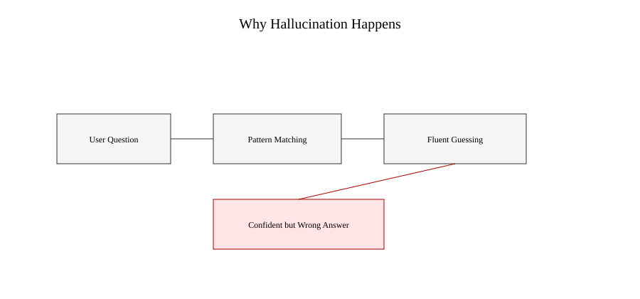
Figure 27.2: The model moves from user input to pattern matching to fluent generation, but without any verification step—leading to confident but ungrounded outputs.
Why This Matters in Real-World Domains
In casual use, these errors are tolerable.
If an AI makes a mistake about a movie plot or suggests a slightly wrong recipe, the consequences are minimal.
But in professional environments, the cost structure changes:
- In law, a fabricated precedent can distort legal strategy
- In medicine, a false claim can influence clinical decisions
- In finance, incorrect assumptions can misguide investment models
The issue is not occasional inaccuracy.
The issue is confident inaccuracy presented in a professional tone.
That combination is uniquely dangerous.
The Missing Layer: Ground Truth
At the core of the problem is a structural absence:
The model has no guaranteed connection to real-world data at the moment it generates an answer.
It is effectively operating in isolation from external knowledge systems.
A useful analogy:
It is like asking a lawyer to argue a case after reading an entire law library once—
but without allowing them to open the books again during the argument.
No matter how capable they are, recall alone is not enough.
📌 Figure 27.3 — The Disconnect from Reality
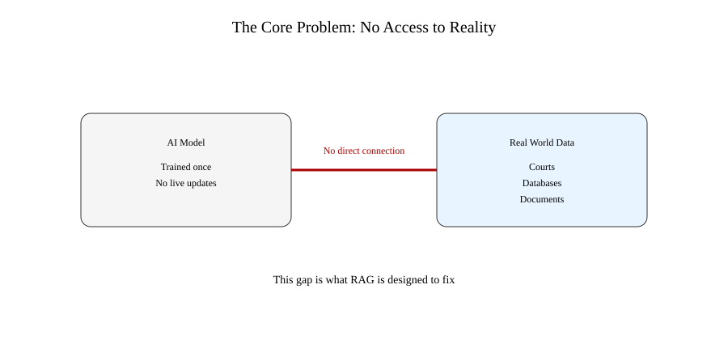
Figure 27.3: Standard language models operate without direct access to live external knowledge sources such as legal databases, court records, or verified documents.
The Key Insight That Changed Everything
If the model cannot reliably remember truth, then the solution is not to improve memory.
It is to change the workflow entirely.
Instead of forcing the model to answer from internal patterns alone, we allow it to:
retrieve relevant external information at the moment of answering.
Not from memory.
Not from guesswork.
But from grounded sources.
This idea is the foundation that leads directly into Retrieval-Augmented Generation.
Section 2 — What RAG Actually Changes
Once you understand the limitation of standard AI systems, RAG stops looking like an optional enhancement.
It becomes a correction layer.
Not an upgrade in intelligence—but a change in behavior.
The core shift is simple:
Instead of answering from internal patterns alone, the system first retrieves relevant external information and then generates an answer grounded in that information.
This introduces something the original model never had:
a controlled connection to reality at runtime.
From Guessing to Grounding
In a standard model, the workflow is linear:
User question → internal pattern matching → generated response
In a RAG system, an extra step is inserted before generation:
User question → retrieval → contextual documents → grounded generation
That single change transforms how reliability is achieved.
The model is no longer forced to “remember” everything.
It is allowed to consult sources before responding.
📌 Figure 27.4 — Standard Model vs RAG Pipeline
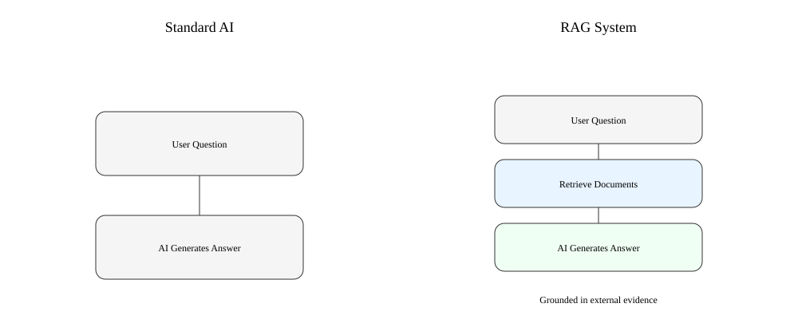
Figure 27.4: Standard AI generates responses directly from learned patterns, while RAG systems first retrieve relevant documents and then generate grounded responses using that context.
The Three Core Components of RAG
A RAG system is not a single model.
It is a pipeline composed of three distinct stages:
1. Retrieval
The system searches external knowledge sources such as: - legal databases - internal company documents - research archives - vector databases
It identifies the most relevant information for the user’s query.
2. Augmentation
The retrieved content is then passed into the model as context.
This step is crucial.
The model does not “remember” this information—it temporarily reads it.
3. Generation
The model produces a response based only on: - the user query - the retrieved documents
This constrains hallucination at the source.
📌 Figure 27.5 — RAG Three-Stage Architecture
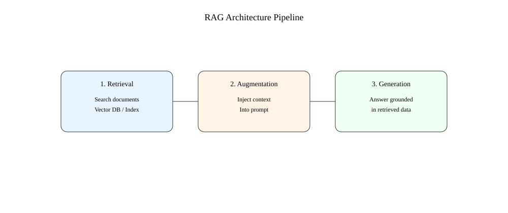
Figure 27.5: Retrieval identifies relevant documents, augmentation injects them into context, and generation produces an answer grounded in retrieved evidence.
Why This Changes Reliability
The key difference is not cosmetic.
It is structural.
A standard model answers the question:
“What is most likely a good answer?”
A RAG system answers a different question:
“Given these retrieved documents, what is the correct answer?”
This shift reduces one of the most persistent issues in AI systems: unsupported confidence.
The model is no longer free to invent context when it runs out of knowledge.
It must anchor its response in retrieved material.
📌 Figure 27.6 — Answering Without vs With Evidence
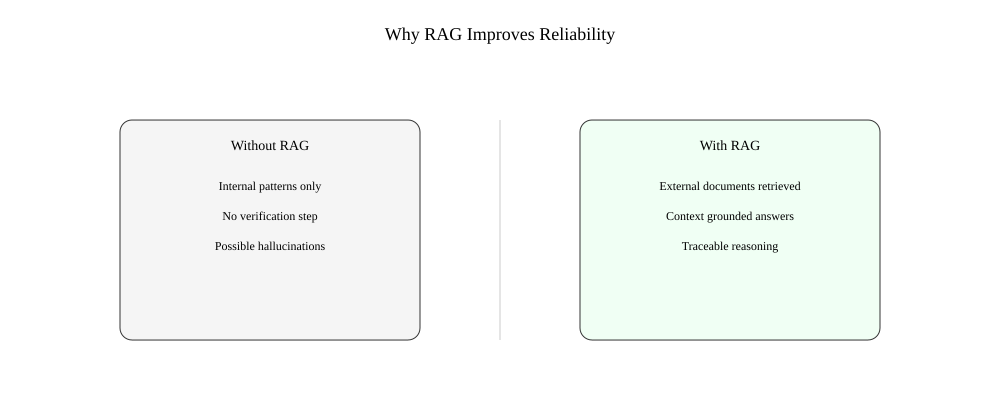
Figure 27.6: Without retrieval, responses are generated from internal patterns alone. With RAG, responses are constrained by external evidence retrieved at runtime.
A Subtle but Important Shift
RAG does not make the model “know more.”
It makes it consult more before speaking.
That distinction is critical.
Because most failures in language models are not due to lack of capability.
They are due to lack of constraint.
RAG introduces that constraint by design.
What This Means in Practice
In real-world systems, RAG enables:
- Legal assistants that cite real case law instead of invented precedents
- Enterprise search systems that answer based on internal documents
- Medical tools that ground responses in verified research papers
- Customer support systems that respond using official documentation
The common thread is not intelligence.
It is traceability.
Every answer can, in principle, be linked back to retrieved sources.
The Foundation for Everything That Follows
RAG is not the end of the system design.
It is the beginning of a broader architecture shift.
Once retrieval becomes part of the pipeline, everything changes:
- how memory is handled
- how knowledge is stored
- how reasoning is constrained
- how trust is established
What comes next is not just better answers.
It is a new way of building AI systems that stay anchored to evidence rather than imitation.
Section 3 — How RAG Actually Works Under the Hood
Up to this point, RAG has looked like a simple idea:
Retrieve information, then generate an answer.
But under the surface, there is a carefully engineered pipeline designed to solve a very specific problem:
How do you find the right information fast enough, and reliably enough, for the model to use it in real time?
This is where RAG becomes more than a concept. It becomes a system.
The Core Problem: Search Is Not Trivial
At first glance, “retrieval” sounds simple.
You search a database, find relevant documents, and pass them to the model.
But real-world data is:
- unstructured
- massive in scale
- semantically ambiguous
- full of near-duplicates
A keyword search is not enough.
If a user asks:
“What are the legal standards for negligence in autonomous driving cases?”
The system must understand meaning, not just words.
It must retrieve documents that are conceptually relevant, even if they do not share exact phrasing.
This is where traditional search breaks down—and RAG introduces a new mechanism.
Step 1 — Turning Language Into Vectors
Instead of treating text as words, RAG systems convert it into numbers.
Each document is transformed into a mathematical representation called an embedding.
An embedding captures meaning such that:
- similar ideas → close together
- different ideas → far apart
This allows the system to search by meaning, not keywords.
A legal case about liability in autonomous systems and a case about driver negligence may look different in text—but sit close in semantic space.
📌 Figure 27.7 — From Text to Semantic Space
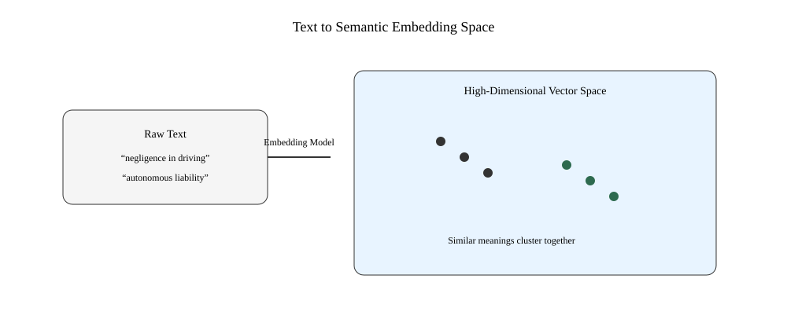
Figure 27.7: Text is converted into high-dimensional vectors where semantic similarity determines proximity, enabling meaning-based search instead of keyword matching.
Step 2 — Storing Knowledge in a Vector Database
Once documents are converted into embeddings, they are stored in a vector database.
Unlike traditional databases, which store rows and columns, vector databases store:
- numerical representations of meaning
- optimized structures for similarity search
When a query arrives, it is also converted into an embedding.
The system then performs a nearest-neighbor search:
“Which stored documents are most similar in meaning to this question?”
This is what makes retrieval intelligent rather than mechanical.
Step 3 — Selecting the Right Context
The system does not pass everything it finds to the model.
It filters.
Typically, it selects: - top-k most relevant documents - optionally reranked for precision - compressed to fit within token limits
This step is critical.
Too little context → incomplete answers
Too much context → confusion and noise
RAG systems are constantly balancing relevance and clarity.
📌 Figure 27.8 — Vector Search and Retrieval Flow
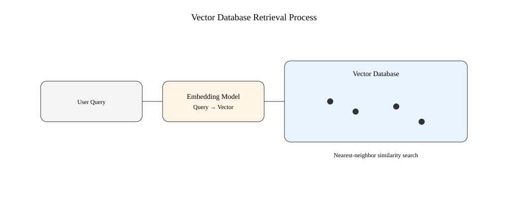
Figure 27.8: A user query is embedded, matched against a vector database, and the most semantically similar documents are retrieved and ranked before being passed to the model.
Step 4 — Feeding Context Into the Model
Once the relevant documents are selected, they are inserted into the model’s input prompt.
At this point, the model is no longer working in isolation.
It is reading a curated set of external references.
However, one important detail must be emphasized:
The model does not “store” this information.
It only sees it temporarily—like notes placed on a desk during an exam.
Once the response is generated, the context disappears.
The Subtle Shift in Intelligence
This architecture creates an important separation of responsibilities:
- Retrieval handles knowledge
- The model handles reasoning and language
This division is intentional.
It prevents the model from having to memorize everything, and instead focuses it on what it does best:
composing coherent, context-aware answers.
Why This Design Is Powerful
RAG systems introduce three major advantages:
1. Freshness
Information can be updated without retraining the model.
2. Accuracy
Answers are grounded in retrieved documents rather than internal guesses.
3. Traceability
Responses can be linked back to specific sources.
This makes the system not just more capable—but more accountable.
📌 Figure 27.9 — Full RAG Workflow Summary
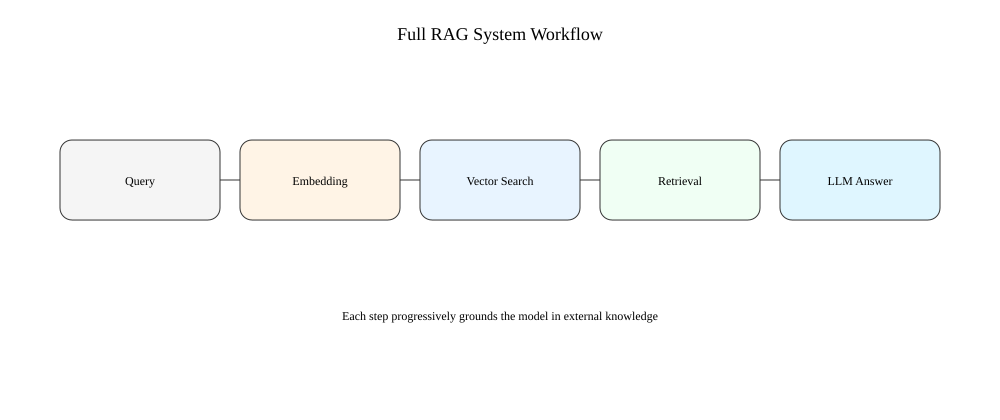
Figure 27.9: The full RAG system flow: query embedding → vector search → retrieval → augmentation → grounded generation.
The Key Insight
RAG does not replace the model.
It reshapes its operating environment.
Instead of forcing the model to act as both memory and reasoner, RAG splits the job:
- External system provides knowledge
- Model provides interpretation
This separation is what makes modern AI systems both scalable and trustworthy.
Without it, large language models remain powerful—but unanchored.
With it, they become usable in environments where correctness matters more than fluency.
Section 4 — Why RAG Is Not Enough (and What Comes Next)
At this point, RAG looks like a complete solution.
It grounds answers in real documents, reduces hallucinations, and introduces traceability.
For many systems, that is already a major upgrade.
But in production environments, another limitation quickly appears:
retrieval is only as good as the system that decides what to retrieve.
And that decision layer is far from perfect.
The New Bottleneck: Finding the Right Context
RAG solves one problem—lack of external knowledge.
But it introduces a second problem:
How do you ensure the right information is retrieved every time?
Because retrieval systems are not intelligent in the human sense. They rely on: - similarity in meaning - statistical proximity in vector space - ranking heuristics
This works well in general cases.
But real queries are rarely clean.
A legal question like:
“Can liability shift in semi-autonomous driving under mixed fault conditions?”
does not map neatly to a single document.
It spans multiple concepts: - negligence - shared liability - autonomous systems - jurisdictional variation
The system must infer intent, not just match meaning.
When Retrieval Gets It Wrong
RAG systems fail in subtle ways:
- They retrieve relevant-looking but incomplete documents
- They miss critical exceptions buried in long text
- They prioritize common interpretations over rare but important cases
- They compress nuance into similarity scores
The model then does what it is told:
It generates an answer based on imperfect context.
So the final output is still grounded—but in partial truth.
This is the new failure mode.
Not hallucination.
Omission.
📌 Figure 27.10 — Good Retrieval vs Bad Retrieval
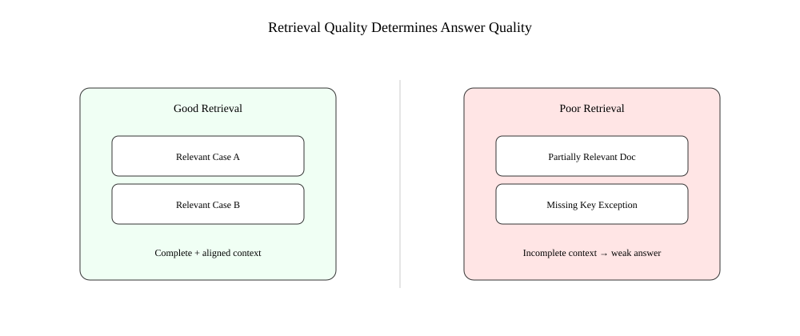
Figure 27.10: Even when a system uses retrieval, poor ranking can surface incomplete or misleading context, which still leads to weak or biased outputs.
The Hidden Assumption in RAG Systems
RAG assumes something very important:
“If we retrieve the right documents, the model will produce the right answer.”
This shifts the burden of correctness upstream.
But it does not guarantee: - relevance completeness - contextual coverage - ranking accuracy - multi-document reasoning
In other words, RAG improves grounding—but not intelligence.
The Next Layer: Reasoning Over Retrieved Information
To address these limitations, modern systems begin adding another layer:
Instead of simply retrieving documents and passing them to the model, they introduce:
- re-ranking models
- query rewriting
- multi-step retrieval
- iterative search loops
- tool-using agents
The system stops behaving like a single request-response pipeline.
It starts behaving like a decision process.
From RAG to Agentic Systems
This is where the evolution begins:
- RAG retrieves information
- Agents decide how to use tools to gather better information
Instead of:
Retrieve once → generate answer
We move toward:
Think → retrieve → refine query → retrieve again → verify → generate
This loop changes everything.
Because now the system is not just answering questions.
It is actively improving its own understanding before responding.
📌 Figure 27.11 — Single-Step RAG vs Iterative Retrieval
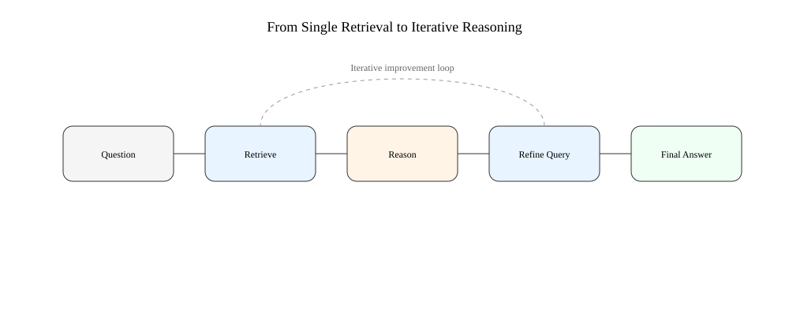
Figure 27.11: Traditional RAG retrieves once before generation, while advanced systems iterate through multiple retrieval and reasoning cycles before producing a final answer.
Why This Matters
RAG was designed to solve hallucination.
But production systems discovered something more important:
The real constraint is not whether the model can generate answers.
It is whether the system can:
- find the right information
- interpret it correctly
- and decide when it is sufficient
This moves AI design from static pipelines to dynamic systems.
The Key Insight
RAG is not the final architecture.
It is the first step in separating:
- knowledge acquisition
- reasoning
- decision-making
Once those layers are separated, AI systems stop being simple responders.
They become structured problem solvers operating over external knowledge.
And that shift is what leads directly into the next evolution: agent-based systems.
Section 5 — When RAG Is No Longer Enough: The Rise of Agents
RAG solved a critical problem in AI systems: it gave models access to external knowledge.
But something interesting happens when you deploy RAG at scale inside real workflows.
The system stops being a simple question-answer tool.
Because real users do not ask clean, single-step questions.
They ask messy, multi-part, evolving problems.
And RAG, in its basic form, is not designed for that.
The Hidden Limitation: One-Shot Thinking
A standard RAG system follows a fixed pattern:
- Receive a question
- Retrieve relevant documents
- Generate an answer
That works well when:
- the question is well-defined
- the required information is clearly retrievable
- the answer exists in a single context window
But real tasks rarely behave that way.
For example:
“Summarize liability trends in autonomous driving, compare them across jurisdictions, and identify gaps in regulation.”
This is not one question.
It is a sequence of sub-problems.
A single retrieval pass is no longer sufficient.
The Shift: From Answering to Planning
This is where a new idea emerges.
Instead of treating the system as a passive responder, we allow it to act more like a planner:
- break the problem into steps
- decide what information is needed
- choose tools for each step
- refine its understanding iteratively
This is the foundation of agent-based systems.
An agent is not just a model that responds.
It is a system that decides how to proceed before responding.
📌 Figure 27.12 — RAG vs Agent Behavior
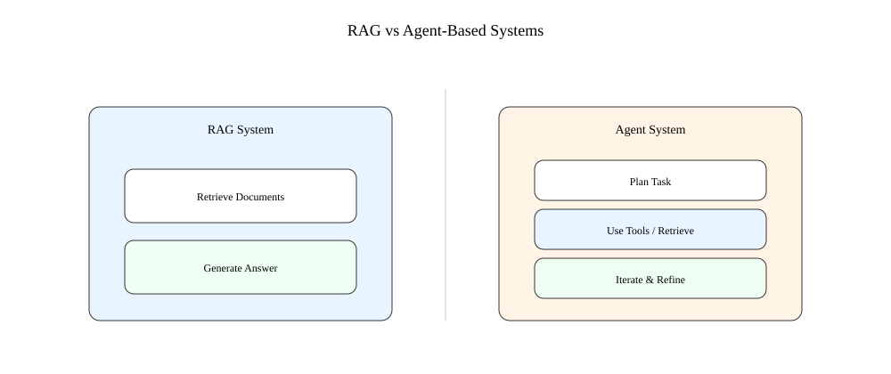
Figure 27.12: RAG systems perform a single retrieval-and-generation step, while agent systems plan, decompose tasks, and execute multiple tool-using steps before producing a final response.
What Changes With Agents
Once planning is introduced, the system gains three new capabilities:
1. Task Decomposition
Large problems are broken into smaller, manageable steps.
Instead of answering everything at once, the system asks: - What are the sub-questions? - What information is needed for each part?
2. Tool Selection
The system can choose between different tools:
- retrieval systems
- calculators
- APIs
- code execution
- search engines
It is no longer limited to one retrieval mechanism.
3. Iteration
The system can refine its own process:
- retrieve → evaluate → retrieve again
- revise queries
- correct missing context
- improve reasoning depth
This creates a feedback loop rather than a single pass.
📌 Figure 27.13 — Agent Workflow Loop
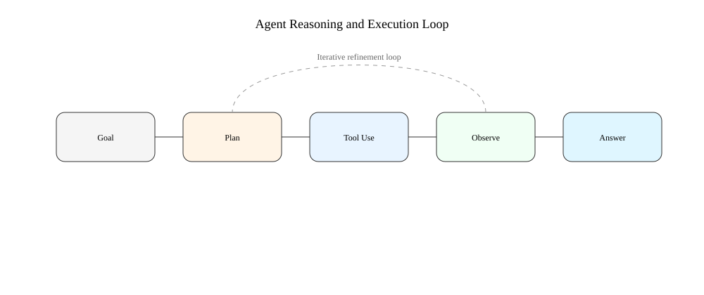
Figure 27.13: Agents operate through an iterative loop of planning, tool use, observation, and refinement before producing a final answer.
From Knowledge Systems to Decision Systems
This transition is subtle but important.
- RAG systems improve knowledge access
- Agent systems improve problem-solving behavior
In other words:
RAG helps the model see more information.
Agents help the model decide what to do with it.
This distinction defines the next generation of AI architecture.
Why This Matters in Real Applications
Once agents are introduced, AI systems become capable of:
- multi-step legal analysis
- research synthesis across multiple documents
- dynamic querying of databases
- verification before final response
- structured decision-making workflows
In legal contexts, this means the system can move beyond:
“Here is a relevant case”
to:
“Here is the relevant case law, here is how it applies, here is what is missing, and here is what should be checked next.”
That is a fundamentally different level of capability.
The Structural Insight
RAG was never the final destination.
It was a bridge.
It connected language models to external knowledge.
But once that connection exists, a new question appears:
What if the system can decide how many times it should retrieve, and what it should retrieve next?
That question leads directly to agents.
And agents represent the beginning of AI systems that are no longer just reactive—but goal-directed.
The Real Evolution Path
The progression is now clear:
- Language Models → pattern-based generation
- RAG → grounded generation
- Agents → structured reasoning and tool use
Each layer does not replace the previous one.
It adds control, structure, and autonomy.
And with that, AI systems begin to resemble something closer to processes than predictions.
Section 6 — The Real Meaning of RAG
By this point, RAG may look like a technical pipeline:
retrieve documents → inject context → generate an answer
But that description hides what is actually happening.
RAG is not a feature.
It is a design philosophy shift.
From Memory Systems to Evidence Systems
Before RAG, language models were treated as if everything important had to be stored inside the model.
RAG rejects that assumption.
Instead, intelligence is distributed:
- the model handles reasoning
- external systems store knowledge
- retrieval connects the two
This changes the definition of “knowing.”
It is no longer about memorization.
It is about access and use.
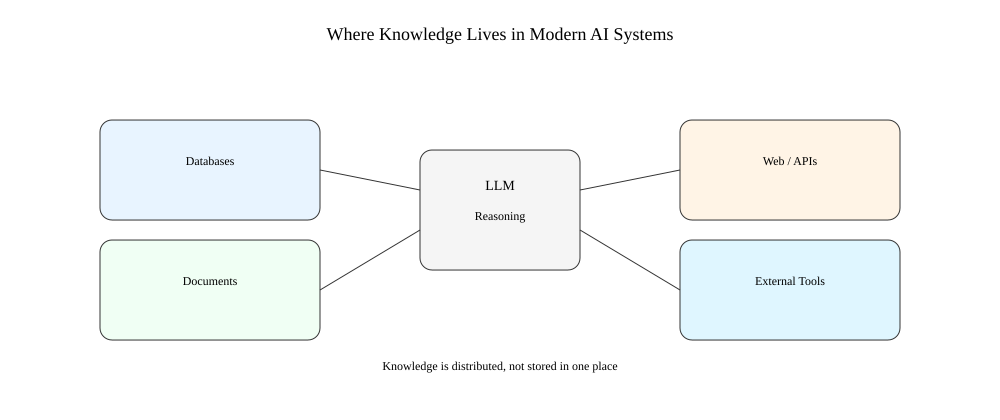
Figure 27.14: Knowledge is distributed across databases, documents, APIs, and tools—not stored inside the model alone.
Why This Matters Beyond Engineering
RAG is not just a technical improvement.
It reflects a deeper shift in how we think about intelligence:
- humans don’t store everything
- humans retrieve information when needed
- reasoning happens after retrieval
RAG makes machines behave in a similar way.
Not by copying humans.
But by removing unrealistic expectations of memory.
The Real Breakthrough
The breakthrough is not that RAG reduces hallucination.
That is a side effect.
The real breakthrough is:
AI systems are no longer required to “know” everything internally.
They are allowed to:
- check
- retrieve
- verify
This changes how trust is established.
The Remaining Boundary
Even with RAG, limitations remain:
- poor retrieval leads to poor answers
- missing data creates blind spots
- outdated sources propagate outdated reasoning
So correctness is not guaranteed.
It is delegated to system design.
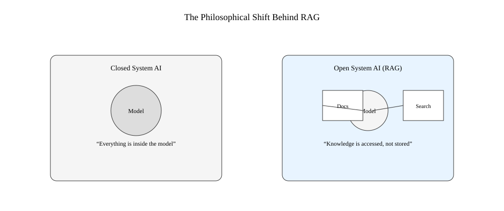
Figure 27.15: Closed systems rely entirely on internal memory, while open systems dynamically retrieve knowledge at runtime.
The Final Shift
RAG is not the end of the architecture.
It is the first step toward systems that:
- retrieve knowledge
- reason over it
- decide how to act on it
This leads directly into the next stage of evolution: agent-based systems.
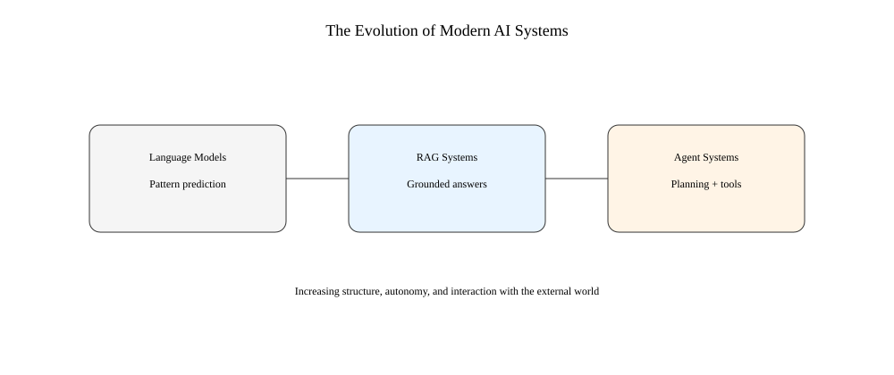
Figure 27.16: AI systems evolve from pure prediction (LLMs), to grounded retrieval (RAG), to goal-directed reasoning and tool use (agents).
Closing Insight
RAG does not make AI perfect.
It makes AI anchored to external reality.
And once that anchor exists, everything else becomes possible:
- better retrieval
- better reasoning loops
- tool use
- autonomous systems
RAG is not the destination.
It is the beginning.
Insight Box — What RAG Really Teaches Us About AI
RAG is often introduced as a technical improvement: a way to reduce hallucinations by giving models access to external documents.
That explanation is correct—but incomplete.
At a deeper level, RAG changes the assumption behind what an AI system is.
It shifts AI from being a self-contained knowledge system to being an interface over distributed knowledge.
The Key Idea
Traditional language models assume:
Knowledge is stored inside the model.
RAG replaces that with a different assumption:
Knowledge is something the system must access, not memorize.
This single shift changes everything about system design.
What Actually Improves
RAG does not make models more intelligent in the human sense.
Instead, it improves three operational properties:
- Grounding → answers are tied to real documents
- Freshness → knowledge can be updated without retraining
- Traceability → outputs can be linked back to sources
These are not “intelligence gains.”
They are system reliability gains.
The Hidden Trade-Off
RAG introduces a new dependency:
The quality of the answer is now constrained by the quality of retrieval.
If retrieval fails, everything downstream degrades—even if the model is powerful.
So the system does not eliminate error.
It relocates it.
The Real Shift in Thinking
RAG forces a mental shift in how AI systems are designed:
- From memorization → access
- From prediction → grounding
- From closed models → open systems
This is the foundation of modern AI architecture.
The Bigger Picture
RAG is not the final solution.
It is the first architectural step toward systems that:
- retrieve information
- reason over it
- refine their own understanding
- and eventually take actions through tools and agents
In that sense, RAG is not the destination.
It is the moment AI systems stopped pretending they could know everything internally—and started learning how to work with the world outside themselves.
Final Thoughts — From Answers to Systems
RAG is easy to misunderstand.
At a surface level, it looks like a fix for hallucinations: add retrieval, improve accuracy, reduce errors.
But that framing is too small.
RAG is not a patch on language models.
It is a redesign of how AI systems relate to knowledge.
The Quiet Revolution
Before RAG, the implicit assumption was simple:
A model should contain knowledge.
After RAG, that assumption breaks:
A model should access knowledge.
This is a subtle change in wording, but a major change in architecture.
Because once you accept that knowledge can live outside the model, everything becomes modular:
- memory becomes a database
- search becomes a component
- reasoning becomes a separate capability
AI stops being a single object.
It becomes a system of interacting parts.
What RAG Actually Solves
RAG does not solve intelligence.
It solves grounding under uncertainty.
It ensures that when a model speaks, it is not only relying on statistical memory, but on retrieved evidence that exists outside itself.
This is what makes it usable in serious domains like law, medicine, and finance.
Not perfection.
But controllable imperfection.
What It Still Cannot Do
RAG systems still inherit constraints:
- retrieval can miss critical information
- context can be incomplete or misleading
- reasoning can still fail even with correct data
In other words, RAG does not remove uncertainty.
It structures it.
The Direction of Travel
Once systems begin retrieving information, a natural progression appears:
- retrieval improves → better grounding
- reasoning improves → better interpretation
- iteration is introduced → better completeness
- tools are added → better capability
RAG is the first stable step in that chain.
It opens the door to systems that do not just answer questions, but actively work through them.
The Deeper Insight
The most important shift is not technical.
It is conceptual:
Intelligence is no longer defined by what a system contains, but by how well it can connect to what exists outside itself.
That redefinition is what makes modern AI systems scalable, adaptable, and increasingly practical.
Closing Perspective
RAG does not complete AI.
It repositions it.
From isolated prediction engines
to connected, evidence-driven systems
From “what does the model know?”
to “what can the system access and verify?”
And that shift is what turns language models into infrastructure.
Not just tools that respond.
But systems that operate over knowledge.